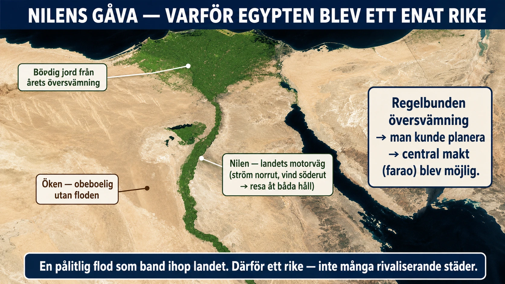

Standardtexten säger något som är lätt att läsa förbi: Egypten blev ett enat rike, medan Mesopotamien blev många konkurrerande stadsstater. Båda växte vid floder — så varför blev de så olika? En stor del av svaret ligger i hur floderna själva betedde sig.
Nilen — den pålitliga floden. Nilens översvämning kom varje år, ungefär vid samma tid, och ungefär lika stor. Egyptierna kunde räkna med den nästan som en klocka. Det låter som en liten sak, men det förändrade allt. När man vet när floden ska stiga kan man planera: samordna sådd och skörd över hela landet, föra bok över åren, bygga en gemensam kalender. En förutsägbar flod inbjuder till att styra allt från ett håll — och gör en central makt, en farao som håller ordning på det stora hela, både möjlig och naturlig.

Nilen — den enande vägen. Nilen gjorde ännu en sak: den band ihop landet. Egypten är i praktiken en lång, smal remsa längs floden, och Nilen var dess motorväg. Och här finns en fin detalj. Strömmen rinner norrut, mot havet, medan vinden nästan alltid blåser söderut, inåt landet. Det betyder att man kunde segla åt ena hållet och driva med strömmen åt det andra — resa fram och tillbaka längs samma flod. Människor, spannmål, order och nyheter kunde färdas genom hela riket. En kung i söder kunde hålla ihop ett land som sträckte sig hundratals mil norrut, eftersom floden förde honom dit.
Eufrat och Tigris — de nyckfulla floderna. I Mesopotamien var det nästan tvärtom. Eufrats och Tigris översvämningar kom oregelbundet — ibland för lite, ibland förödande mycket — och vid en tid på året som passade jordbruket dåligt. Floderna kunde till och med plötsligt byta lopp och lämna en hel stad utan vatten. Där Nilen gav trygg regelbundenhet, gav Mesopotamiens floder osäkerhet och plötsliga katastrofer. Och de band inte ihop landet till en enda naturlig väg på samma sätt. Resultatet blev en värld av stadsstater — städer som var för sig byggde sina egna murar, skötte sina egna kanaler och ofta krigade med varandra om vatten och jord. Ingen enda farao, utan många rivaliserande härskare.
Men bestämde floden allt? Nej — och det är viktigt att inte överdriva. Egypten var inte alltid enat; det föll ibland isär i oroliga perioder innan det samlades igen. Och Mesopotamien enades tidvis under starka erövrare. Geografin avgjorde inte varje detalj. Men den lade en tung tumme på vågen: Nilens pålitlighet och enande lopp drog Egypten mot enhet, medan Eufrats och Tigris nyckfullhet drog Mesopotamien mot splittring.
Det här är värt att bära med sig, för vi ska snart möta en plats där geografin drar åt ett helt annat håll. Floderna här samlade människor till stora riken. I Grekland ska vi se hur berg och hav i stället splittrar — och vad som händer med en kultur när landet självt drar isär den.